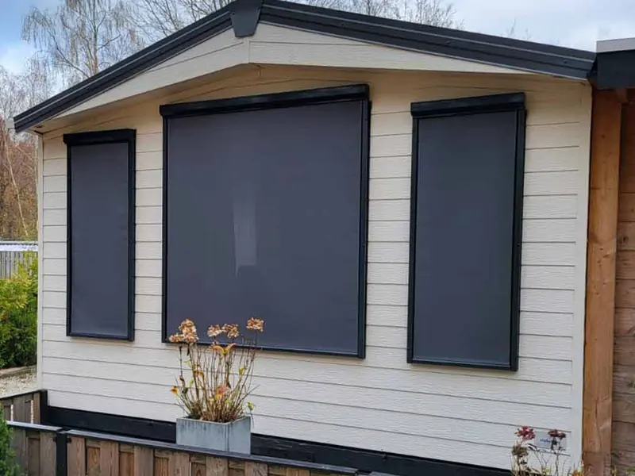

Project van Van Dinther
03.1
Screens
Screens zitten strak voor het raam en houden de warmte buiten, terwijl u naar buiten blijft kijken. Geschikt voor woning en kantoorpand.
- Strak voor het raam
- Warmte blijft buiten
- Ook voor kantoorpanden